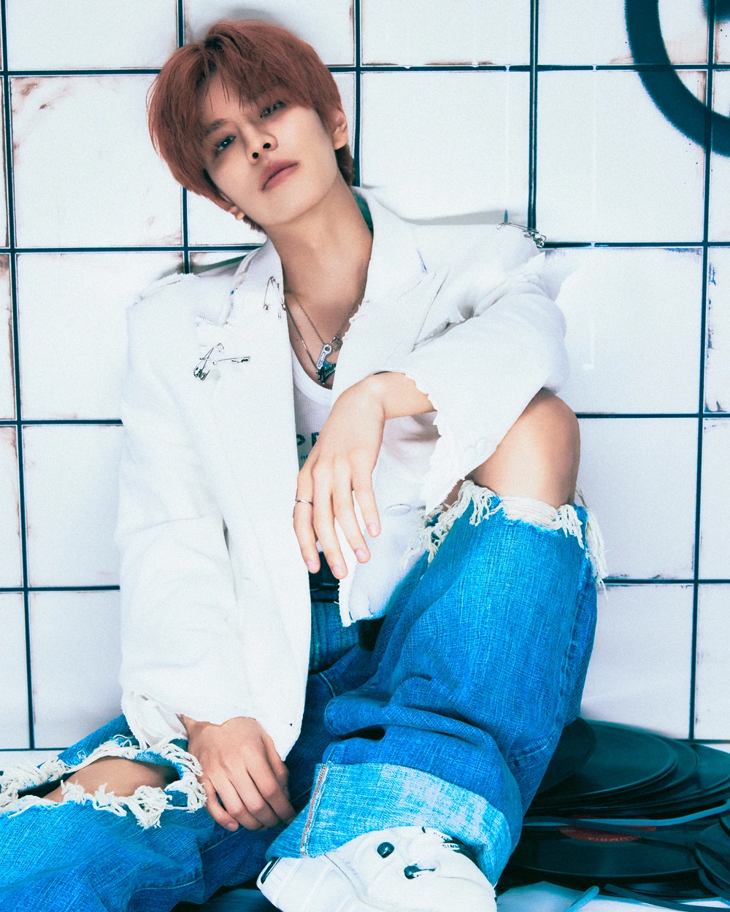
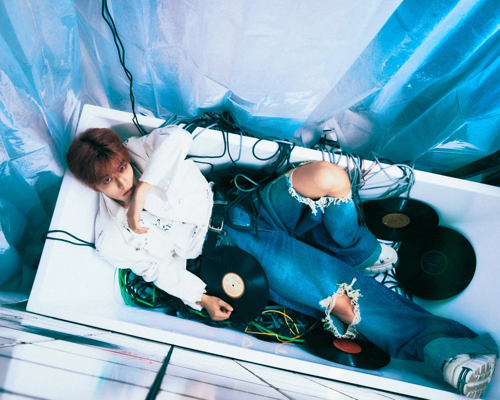
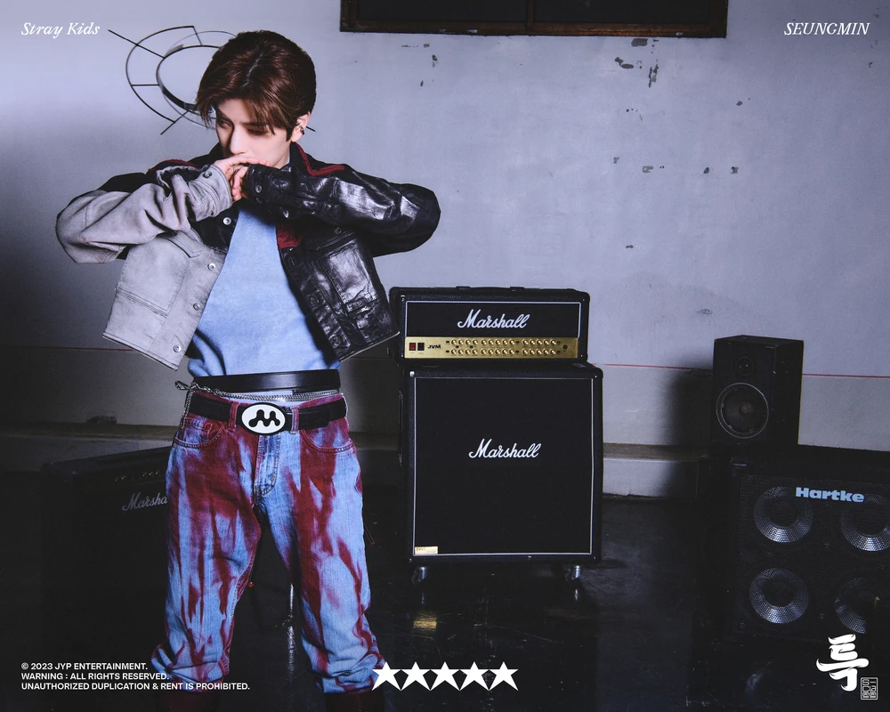
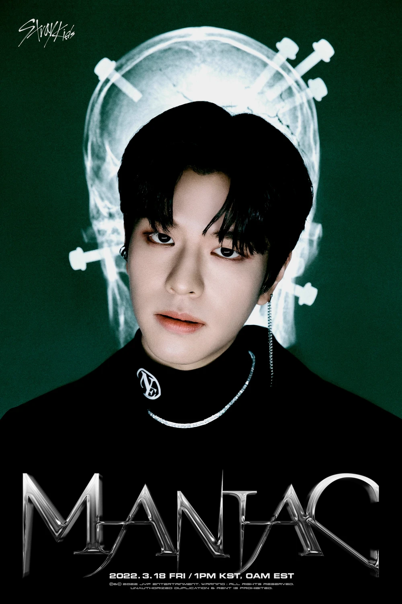
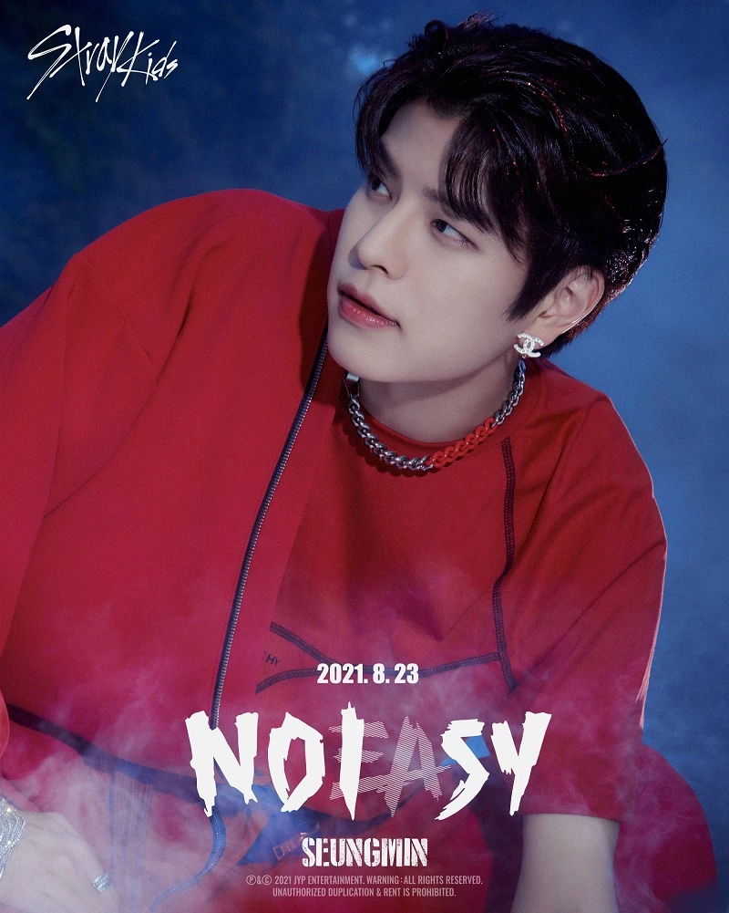
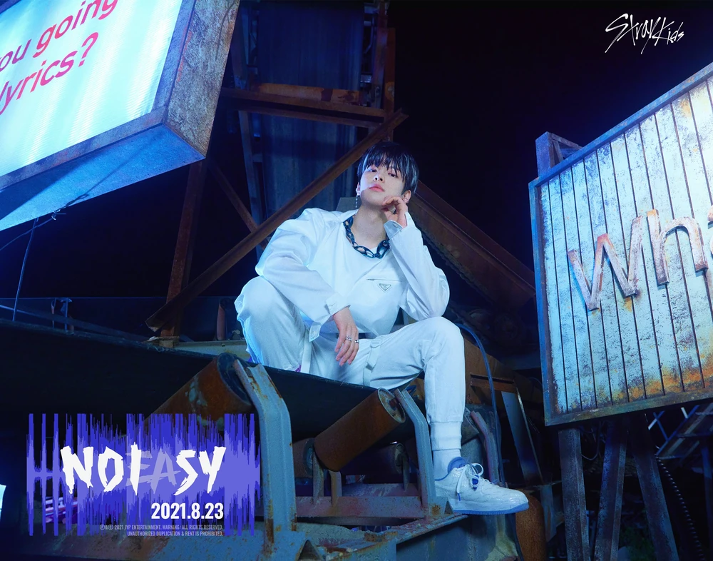
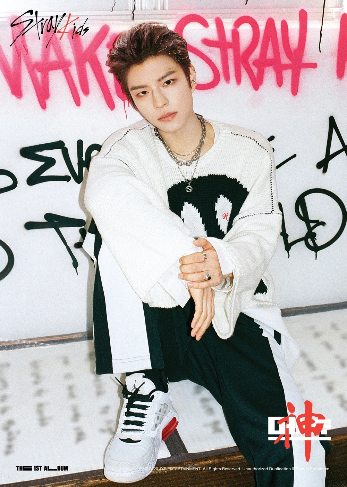
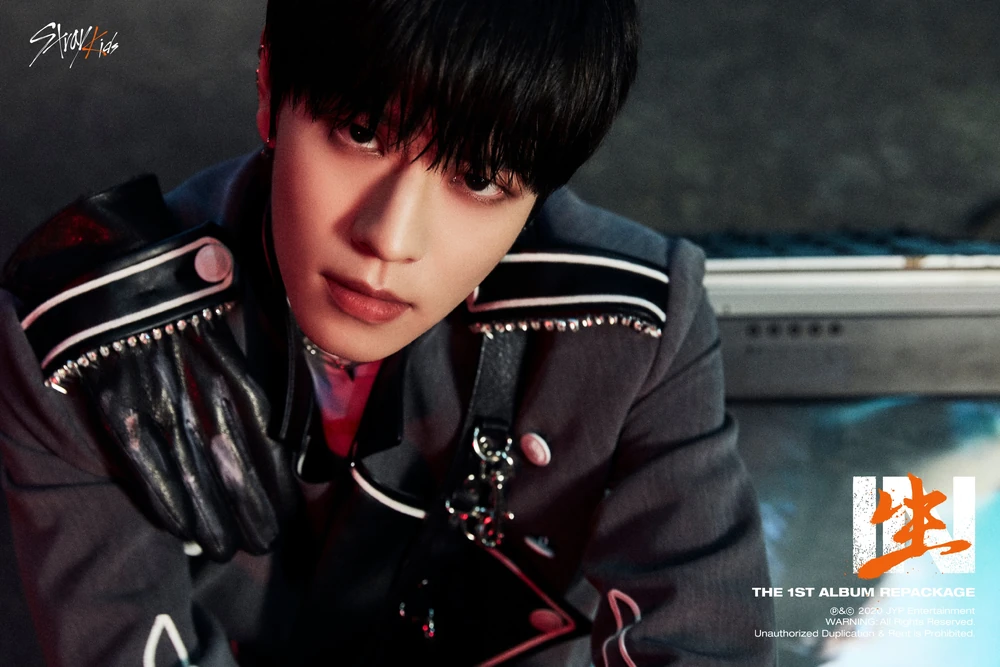

STRAY KID'S VOCALIST
He was introduced to baseball by his grand-father. He dreamed of becoming a baseball player so he worked hard for it but he had to stop because of an injury and other problems. Still, he liked singing ever since he was little. In the fourth grade of elementary school, he went to a nursery rhyme contest, won a prize, and joined a choir. In middle school, when he was thinking about what he should do to be happy in life, he thought about "music", so he studied and practiced singing to appeal to his parents.
His individual picture and name were officially revealed by the company on October 13, 2017 at noon, for his participation in the upcoming survival show Stray Kids. He was introduced with the role "Vocal". On the final episode of the show on December 19, 2017, it was confirmed that Seungmin would debut in the boy group Stray Kids.
Seungmin is dedicated to the role of main vocalist, and eager to improve as he scouted for his own vocal coach. His voice is characterized by a warm timbre, which is often said to convey melancholy. In the recent years, he has shown his growth through is ability to reach high notes and have a powerful yet stable voice.

ROCKSTAR
Rock-Star is the eighth Korean-language extended play (thirteenth overall) by South Korean boy band Stray Kids, released on November 10, 2023, through JYP Entertainment and Republic Records, five months after their third studio album 5-Star (2023). Based on Korean four-character idiom of emotions huiroaerak, 3Racha, an in-house production team of the group, worked on the EP with Versachoi, Cubeatz, Willie Weeks, Millionboy, Nickko Young, and Jun2.

5-STAR
5-Star (stylized as ★★★★★) is the third Korean-language studio album (fourth overall) by South Korean boy band Stray Kids. It was released on June 2, 2023, through JYP Entertainment and Republic Records, following their seventh EP Maxident (2022). A combination of hip hop, pop, and electronica elements, 5-Star lyrically addresses themes of uniqueness, confidence, and aspirations.

MAXIDENT
Rock-Star is the eighth Korean-language extended play (thirteenth overall) by South Korean boy band Stray Kids, released on November 10, 2023, through JYP Entertainment and Republic Records, five months after their third studio album 5-Star (2023). Based on Korean four-character idiom of emotions huiroaerak, 3Racha, an in-house production team of the group, worked on the EP with Versachoi, Cubeatz, Willie Weeks, Millionboy, Nickko Young, and Jun2.

ODDINARY
Oddinary is the sixth extended play and ninth overall recorded by South Korean boy band Stray Kids. It was released on March 18, 2022, through JYP Entertainment and Republic Records, seven months after the band's second studio album Noeasy (2021). The EP is Stray Kids' first release on Republic Records, which they signed in February 2022. A blend of "odd" and "ordinary", Oddinary represents "all of us who have something odd about ourselves" and the concept "odd things will soon become ordinary".

NOEASY
Noeasy is the second studio album by South Korean boy group Stray Kids. It was released on August 23, 2021, through JYP Entertainment, nine months after its predecessor the Japanese-language extended play (EP) All In (2020), and eleven months after the Korean reissue In Life (2020). The album's title is a wordplay on "noisy" and "no easy", and conveys the idea of the group making a loud impact on the world with their music.


GO LIVE
Go Live (stylized in all caps) is the debut studio album by South Korean boy group Stray Kids. It was released by JYP Entertainment on June 17, 2020, and distributed through Dreamus. The lead single, "God's Menu", was released the same day. The reissue edition of the album, titled In Life (stylized in all caps) was released on September 14, 2020, along with eight new tracks, including lead single "Back Door".
